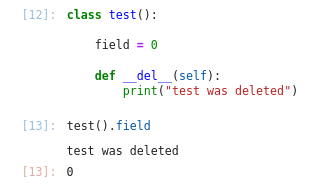
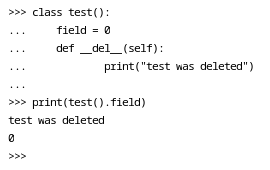

class Thing(type):
'''
Класс вещь. Это метакласс.
Дело в том, что некоторые методы могут быть
переопределены только в метаклассах.
'''
def __instancecheck__(self, instance):
'''
Будет вызван для базовой функции isinstace
'''
print("__isinstacecheck__ called")
return super().__instancecheck__(instance)
def __subclasscheck__(self, subclass):
'''
Будет вызван для базовой функции issubclass
'''
print("__issubclasscheck__ called")
return super().__subclasscheck__(subclass)
class TechThing(metaclass = Thing):
'''
Класс "технологическая штука"
исопльзуется для изучения фишек связаных
с наследованием.
'''
find_field = "find field of TechThing"
class Machine(TechThing):
'''
Класс "Машина" используется для изучения
фишек связанных с наследованием
'''
pass
class Veicle():
'''
Класс "Средсво передвижения" используется
для исследования фишек связанных с наследованием
'''
find_field = "find field of Veicle"Источники информации
Разбор спецальных меодов/полей в языке программирования python3
- Python на примерах Васильев А.Н. глава 8, раздел Специальные методы и поля
Классы которые послужат примером
Специальные методы и поля начинаются и заканчиваются двумя подчеркиваниями. Далее рассмотрим сисетму классов, на примере которой будут разобраны возможности всех специальных методов/полей.
Классы родители и мета классы
Класс Auto класс над которым будет проводиться наибольшее число испытаний
class Auto(Veicle, Machine):
'''
Класс "Автомобиль" исопльзуется для
создания изучения специальных методов и полей
'''
class hundle():
pass
atribute_var = 5
def atribute_method(self):
pass
# ===================================================
# МЕТОДЫ ПРИВЕДЕНИЯ К ТИПУ
# ===================================================
def __bool__(self):
'''
Будет вызван для экземпляра переданного
базовой функции bool.
В данном случае я наделю её следующим смыслом -
если для экземпляра была определено поле marka
то будет преобзовываться в True в противном случае
в False
'''
return False if self.marka == None else True
def __complex__(self):
'''
Будет вызван для экземпляра преданного
базовой функции complex.
'''
return complex(len(self.marka), len(self.marka))
def __float__(self):
'''
Будет вызван для экземпляра переданного
базовой функции float.
'''
return float(len(self.marka))
def __int__(self):
'''
Будет вызван для экземпляра преданного
базовой функции int.
'''
return len(self.marka)
def __str__(self):
'''
Будет вызван для экземпляра переданного
базововй функции str.
'''
return self.marka
# ===================================================
# МЕТОДЫ ПРИВЕДЕНИЯ К ТИПУ
# ===================================================
# ===================================================
# МЕТОДЫ ДЛЯ РАБОТЫ
# с индексами (операторы [])
# ===================================================
def __setitem__(self, i, v):
'''
Метод, который будет использоваться
при использовании индекса (оператора "[]")
с присвоением.
i - переданный индекс;
v - присваиваемое занчение.
'''
self.marka = self.marka[:i] + v + self.marka[i+1:]
def __getitem__(self, i):
'''
Метод, который будет использоваться
при вызове индекса (оператора []).
i - переданный индекс.
'''
return self.marka[i]
def __delitem__(self, i):
'''
Метод, который будет вызван
при использовании оператора del
для выбранного иднекса (оператора [])
'''
self.marka = self.marka[:i] + self.marka[i+1:]
# ===================================================
# МЕТОДЫ ДЛЯ РАБОТЫ
# с индексами (операторы [])
# ===================================================
# ===================================================
# ДРУГИЕ МЕТОДЫ
# ===================================================
def __init__(self, marka):
'''
Вызывается при создании любого экземпляра
'''
self.marka = marka
def __del__(self):
'''
Вызывается при удалении любого экземпляра
'''
print(self.marka, "удачно был удален")
def __call__(self):
'''
Вызывается при вызове какого-либо экземпляра класса
'''
return "вы вызвали " + self.marka
def __len__(self):
'''
Вызывается при передаче экземпляра класса
в базовую функцию len
'''
return len(self.marka)
def __index__(self):
'''
Будет вызван при передаче экземпляра класса
одной из базовых функции bin, oct и hex.
Но самого преоброзования к соответсвующей
системе исчисления не надо - достаточно вернуть
десятичное число
'''
return 17
def __round__(self):
'''
Будет вызван при передаче экземпляра класса
базовой функции round.
'''
self.marka += " rounded"
return self
# ===================================================
# ДРУГИЕ МЕТОДЫ
# ===================================================Класс который позволит подробнее разобраться с методами для работы с индексами (оператор [])
class indexer_example():
def print_index(self, index):
print("пришёл инедкс", index)
def __setitem__(self, i, v):
self.print_index(i)
print("пришло занчение ", v)
def __getitem__(self, i):
self.print_index(i)
def __delitem__(self, i):
self.print_index(i)Замечание
Заметим, интерестную деталь которую я выяснил работая над этим файлом: при вызове поля атрибута класса из только созданного объекта IPython после завершения выполнения ячейки производит удаление только, что созданного экземпляра.

Интерпритатор, понятное дело, ведет себя аналогично.

Потому не обращайте внимание на постоянно сопутсвующий примерам вывод типа:
<name_of_car> удачно был удален
Методы
Методы метаклассов
__instancecheck__
Доступен пример использования https://github.com/Dranikf/knowledge_bank/blob/main/python_class_interface/python_class_interface.ipynb (см. раздел “Использование метаклассов”)
Будет вызван для класса при использовании встроенной функции isinstace(instance, class) - функции которая (при __instancecheck__ оставленного по умолчанию) вернет True если первый аргумент экземпляр класса указанного вторым.
isinstance(Auto("Gelentvagen"), TechThing)__isinstacecheck__ called
Gelentvagen удачно был удаленTrueПритом, ход приведенный в следующей ячейке, не сработает.
isinstance(Auto("Toyota"), Auto)Toyota удачно был удаленTrueВидимо потому, что в класс Auto не указан метакласс Thing как это сделано для класса TechThing. Весьма обывательское объяснение, но возможно в будующем я буду знать об этой концепции больше.
__subclasscheck__
Доступен пример использования https://github.com/Dranikf/knowledge_bank/blob/main/python_class_interface/python_class_interface.ipynb (см. раздел “Использование метаклассов”)
Будет вызван для класса при использовании встроенной функции issubclass(class1, class2) которая (при __subclasscheck__ оставленной по умолчанию), вернет True если class1 наследник class2.
issubclass(Auto, TechThing)__issubclasscheck__ calledTrueПритом, ход приведенный в следующей ячейке, сработает, в отличии от аналогичной ситуации для другого специального метода метаклассов __instancecheck__.
issubclass(Auto, Machine)__issubclasscheck__ calledTrueПочему так, на данном этапе погружения в pyhton, остается загадкой.
Методы приведения к типу
__bool__
Этот метод будет вызван для любого экземпляра переданного в базовую функцию bool
print("Gili result", bool(Auto("Gili")))
print("None result", bool(Auto(None)))Gili удачно был удален
Gili result True
None удачно был удален
None result False__complex__
Этот метод будет вызваться при передече экземпляра класса в функцию complex. complex производит преведение переданного объекта к типу complex. В данном случае я в преобразование заложил чтобы действительная и мнимая части числа были равны числу букв в марке автомобиля.
complex(Auto("Lexus"))Lexus удачно был удален(5+5j)__float__
Этот метод будет вызваться при предаче экземпляра класса в функцию float. float произодит приведение переданного объекта к типу float. В данном случае я в преобразование заложил, чтобы возвращалось число символов в поле marka преобарзованное к типу float
float(Auto("Hyundai"))Hyundai удачно был удален7.0__int__
Этот метод будет вызываться при передаче экземпляра класса в функцию int. int производит приведенение переданного объекта к типу int. В данном случае я в преобразование заложил, чтобы приведение означало подсчет числа символов в марке автомобиля.
int(Auto("Mitsubishi"))Mitsubishi удачно был удален10__str__
Этот метод будет вызываться при передаче экземпляра класса в функцию str. str производит приведение переданного объекта к строковому типу. В данном случае я в преобразование заложил, чтобы приведение просто возвращало марку автомобиля.
str(Auto("Honda"))Honda удачно был удален'Honda'Методы для работы с индексами
__setitem__
Метод, который будет вызваться при использовании оператора [] с присвоением. В метод __setitem__ должен содерать два аргумента: 1. индекс - объект указонный в скобках; 2. значение - присваимое заначение (после оператора =).
Был заложен смысл извлечения замены символа в марке автомобиля.
maz_car = Auto("Maserati")
maz_car[3] = "t"
print(maz_car)Mastrati удачно был удален
Mastrati__getitem__
Метод, который будет вызваться при использовании оператора [], для извелечения значения. В данном случае, индекс используется как индекс марки автомобиля.
bug_car = Auto("Bugatti")
bug_car[:3]'Bug'__delitem__
Метод, который будет вызываться при использовании оператора [] вместе с оператором del. В данном случае, из марки автомобиля
bmw_car = Auto("BMW")
del bmw_car[1]
bmw_car.markaBW удачно был удален'BW'Множественный индекс
При передаче множественного индекса, функции __setitem__, __getitem__ и __delitem__ в аргуметы соответвующие индексу получают картеж.
ind_exmpl = indexer_example()
ind_exmpl[3,4,5,"str index"]пришёл инедкс (3, 4, 5, 'str index')Опретор : внутри индекса
При использовании : внутри индекса в методы отвечающие за управление поведением класса придет slice
ind_exmpl = indexer_example()
ind_exmpl[:3]пришёл инедкс slice(None, 3, None)Протокол итерации
Или методы которые делают экземпляры класса iterable.
__iter__
Вызывается для того, что-бы “предупредить” объект, что по нему будут итерироваться - можно провести некоторый процессинг, который будет готовить этот класс к итерированию по нему. Будет вызван при: - Передаче экземпляра в функцию iter(); - При использовании после оператора in в цикле for.
Ожидается возврат любого объекта у которого переопределен метод __next__. Чаще всего возврящают self но не всегда.
__next__
Определяет что класс будет возвращать при каждой следующей итерации по нему. Будет вызван при: - Передаче экземпляра в фнукцию next(); - При каждой идерации цикла for по объекту.
Возвращать следует, то что должно попасть в теририрующую переменную на этой итерации.
В момент, когда требуется прeкратить процесс итерирования следует использовать raise StopIteration.
Базовый пример
Эти операторы лучше рассматривать в комбинации, потому общий пример для них:
class ar_progression_shower:
'''
Класс имплементирует расчет элементов
арифметической прогрессии до определенного
наблюдения в прогрессии
'''
def __init__(self, a0 = 0, n = 5, d = 3):
self.n = n
self.a0 = a0
self.d = d
def __iter__(self):
print("был вызван __iter__")
self.i = 0
self.curr_a = self.a0
return self
def __next__(self):
print("был вызван __next__")
if self.i < self.n:
self.curr_a = self.a0 + self.d*self.i
self.i += 1
return "{} : {}".format(self.i-1, self.curr_a)
else:
print("вызван StopIteration")
raise StopIteration
example_iter = ar_progression_shower()Можно использовать методы iter() и next().
iter(example_iter)
print(next(example_iter))
print(next(example_iter))
print(next(example_iter))
print(next(example_iter))
print(next(example_iter))был вызван __iter__
был вызван __next__
0 : 0
был вызван __next__
1 : 3
был вызван __next__
2 : 6
был вызван __next__
3 : 9
был вызван __next__
4 : 12Но в случае, если вывалиться за допустииое число итераций. Вывод будет следующий.
iter(example_iter)
print(next(example_iter))
print(next(example_iter))
print(next(example_iter))
print(next(example_iter))
print(next(example_iter))
print(next(example_iter))был вызван __iter__
был вызван __next__
0 : 0
был вызван __next__
1 : 3
был вызван __next__
2 : 6
был вызван __next__
3 : 9
был вызван __next__
4 : 12
был вызван __next__
вызван StopIterationStopIteration: Все те-же самые результаты при использовании цикла.
for val in example_iter:
print(val)был вызван __iter__
был вызван __next__
0 : 0
был вызван __next__
1 : 3
был вызван __next__
2 : 6
был вызван __next__
3 : 9
был вызван __next__
4 : 12
был вызван __next__
вызван StopIterationtype(iter(example_iter))был вызван __iter____main__.ar_progression_showerФишки
Без __next__
class test:
def __iter__(self):
return self
iter(test())TypeError: iter() returned non-iterator of type 'test'class test:
def __next__(self):
return 0
def __iter__(self):
return self
iter(test())<__main__.test at 0x7f081022c220>list/tuple/dict как результат __iter__
Сами по себе эти пипы не переопределяют __next__, как следвие, вернуть их как из __iter__ не получится.
class test():
def __iter__(self):
return [10, 20, 30, 40]
iter(test())TypeError: iter() returned non-iterator of type 'list'class test():
def __iter__(self):
return (10, 20, 30, 40)
iter(test())TypeError: iter() returned non-iterator of type 'tuple'class test():
def __iter__(self):
return {"a":10, "b":20, "c":30, "d":40}
iter(test())TypeError: iter() returned non-iterator of type 'dict'Но можно вернуть результат передачи их функции iter(). Обращею отдельное внимание на типы данных результатов.
class test():
def __iter__(self):
return iter([10, 20, 30, 40])
type(iter(test()))list_iteratorclass test():
def __iter__(self):
return iter((10, 20, 30, 40))
type(iter(test()))tuple_iteratorclass test():
def __iter__(self):
return iter({"a":10, "b":20, "c":30, "d":40})
type(iter(test()))dict_keyiteratorДругие методы
__init__
Будет вызван при создании экземпляра класса
Auto("mersedes").markamersedes удачно был удален'mersedes'__del__
Будет вызван при удалении экземпляра класса
a = Auto("москвич")
del aмосквич удачно был удален__call__
Вызывается при попытке “вызвать” экземпляр класса, то есть ипользование оператора () для экземплара класса.
Auto("tesla")()tesla удачно был удален'вы вызвали tesla'__len__
Вызывается при передаче экземпляра в функцию базовую функцию len. В данном случае я заложил возврат числа символов в марке.
len(Auto("Mazda"))Mazda удачно был удален5__index__
Вызывается при передаче экземпляра в одну из базовых функций bin, oct и hex. Вернуть из __index__ следует число, которое в зависимости от вызванной функции будет преобразовано соответсвенно к соответсвующей системе исчисления. В данном случае __index__ всегда возвращает число 17.
my_auto = Auto("Lambargini")
print("Приведение к бинарному виду ", bin(my_auto))
print("Приведение к восьмеричному виду ", oct(my_auto))
print("Приведение к шестнадцатиричному виду ", hex(my_auto))Lambargini удачно был удален
Приведение к бинарному виду 0b10001
Приведение к восьмеричному виду 0o21
Приведение к шестнадцатиричному виду 0x11__round__
Вызвается при передаче экземпляра базовой функции round.
jeep_auto = Auto("Jeep")
round(jeep_auto).markaJeep rounded удачно был удален'Jeep rounded'Поля классов
__bases__
Возвраящет список базовых классов
Auto.__bases__(__main__.Veicle, __main__.Machine)__dict__
Слварь с атрибутами класса. Атрибутом класса называется, что-либо объявленное в глобальном пространсве класса.
Auto.__dict__mappingproxy({'__module__': '__main__',
'__doc__': '\n Класс "Автомобиль" исопльзуется для \n создания изучения специальных методов и полей\n ',
'hundle': __main__.Auto.hundle,
'atribute_var': 5,
'atribute_method': <function __main__.Auto.atribute_method(self)>,
'__init__': <function __main__.Auto.__init__(self, marka)>,
'__del__': <function __main__.Auto.__del__(self)>,
'__call__': <function __main__.Auto.__call__(self)>,
'__bool__': <function __main__.Auto.__bool__(self)>})__doc__
Док-строка класса
print(Auto.__doc__)
Класс "Автомобиль" исопльзуется для
создания изучения специальных методов и полей
__module__
Возвращается модуль класса
import pandas as pd
pd.DataFrame.__module__'pandas.core.frame'__mro__
Цепочка наследования класса. А именно последовантельность классов в котороых будут искаться те или иные вызываемые поля.
Идея приводимого моной тут примера в следующем - я создаю Auto и пытаюсь достать из него find_field, который определен только в базовых классах. В результате, будет выведен find_field того класса который в результатах __mro__ ближайший и, при том, имеет определение поля find_field.
Auto.__mro__(__main__.Auto, __main__.Veicle, __main__.Machine, __main__.TechThing, object)Auto("chevrolet").find_fieldchevrolet удачно был удален'find field of Veicle'Вызывая find_field я наткнулся на принадлежащий классу Veicle, то есть певого в кортеже __mro__ его объявляющего.
__name__
Возвращает имя класса
Auto.__name__'Auto'__qualname__
Дословно поле описываю так: “возвращается полное имя класса в точечном формате, отображающем структуру вложенных классов”. Я понимаю это так, если я вызову у класса hundle который объявлен в нутри класса Auto то поле, то я полулу полное имя класса в точечном формате.
Auto.hundle.__qualname__'Auto.hundle'Для сравнения результат вызова поля __name__ того же класса.
Auto.hundle.__name__'hundle'Поля экземпляров
__class__
Это поле содержит название класса которому принадлежт объект. Далее пару примеров
a1 = Auto("BMW")
a1.__class____main__.Autoimport pandas as pd
pd.DataFrame({
"1" : [1,2]
}).__class__pandas.core.frame.DataFrameЗаметим, что сами классы это тоже эксемпляры класса type
Auto.__class____main__.Thing